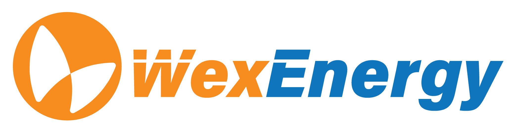

Project Synopsis
WexEnergy is a sustainability focused company that aims to reduce carbon emissions with their unique window
insulation technology. Their WexWindow product is a window insulation panel, designed to decrease energy flow
through existing windows for both commercial and residential buildings. WexWindow helps maintain interior heat
in the winter and keep exterior heat out in the summer, helping customers be more energy efficient and save on
heating and cooling costs. For customers interested in adding WexWindows to their property, WexEnergy has
developed an Android compatible application to simplify the quoting process.
Our job as a team is to expand upon WexEnergy's existing android application, while also making it available
to iOS users. Throughout the project, we will work on improving the existing UI/UX to make the workflow more
intuitive, create more documentation including a tutorial on how to use the application, handle edge cases
during data transfers, do extensive alpha and beta testing for both android and iOS, and add a customer input
form to the workflow.
